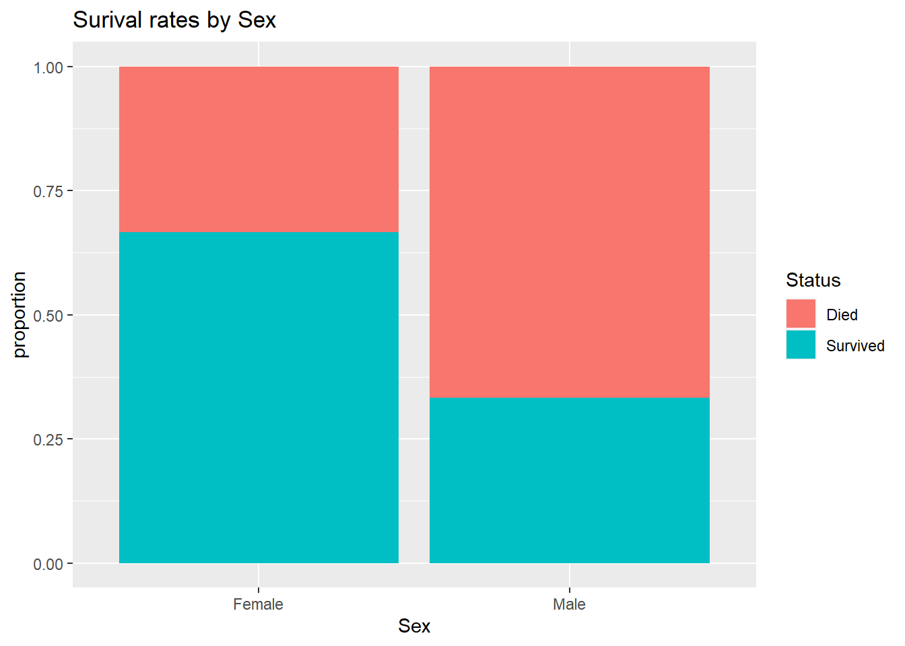
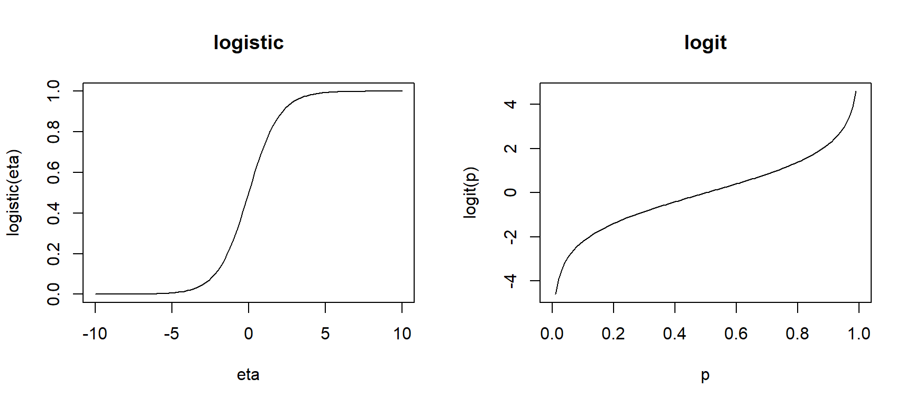
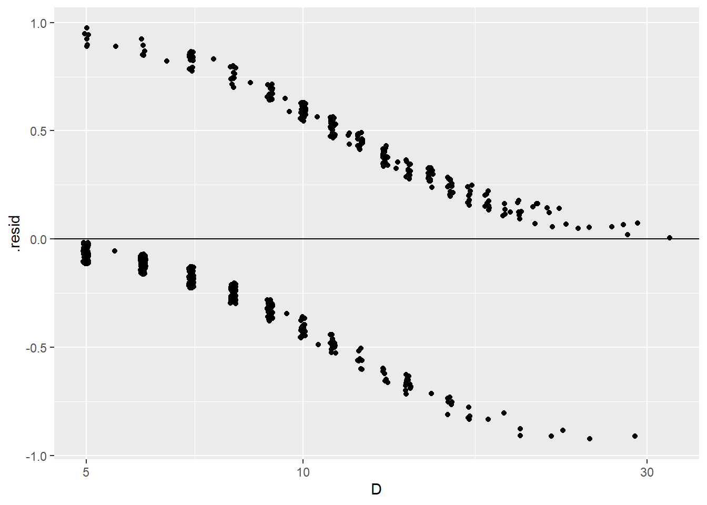
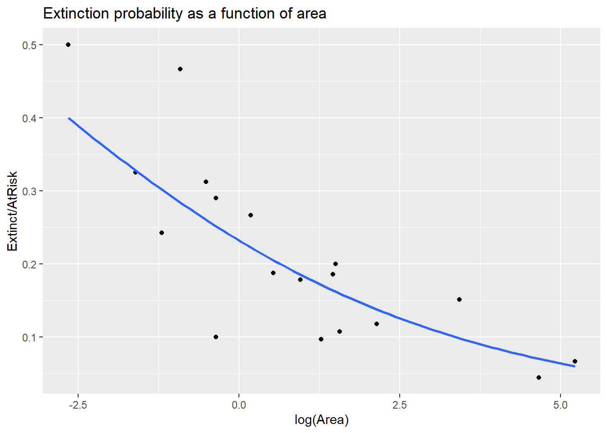
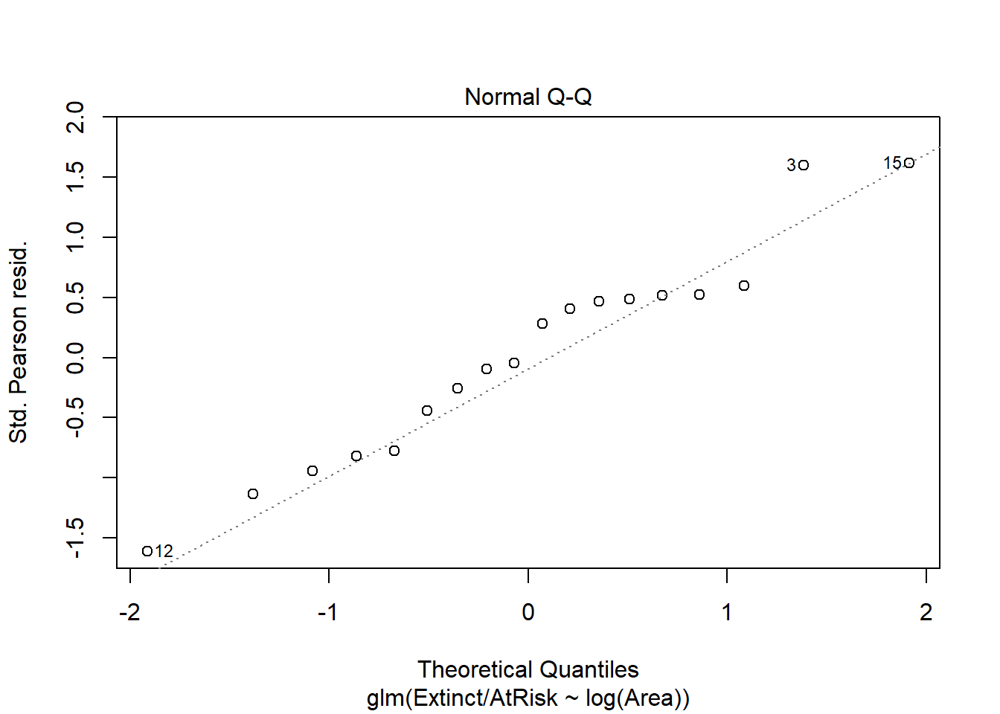
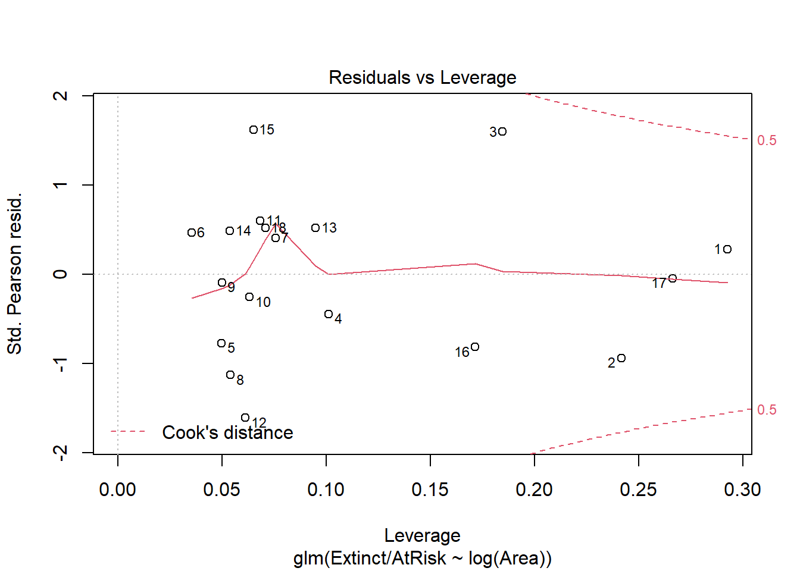
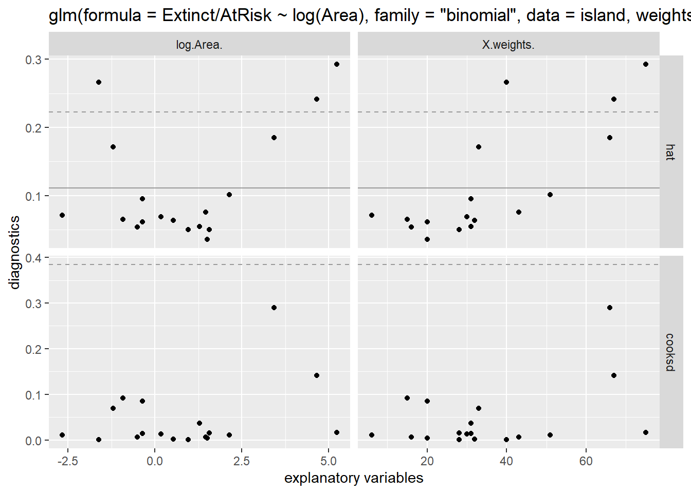
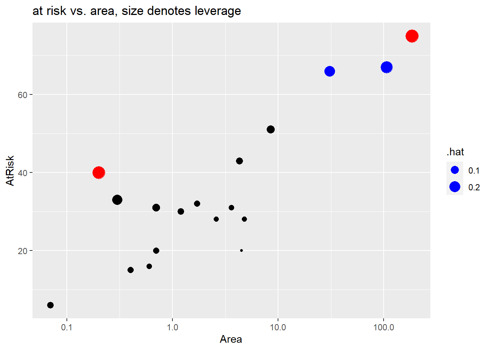

Chapter 4 Logistic Regression
This chapter covers material from chapters 20-22 of Sleuth.
4.1 The variables
Suppose we have a categorical response variable \(Y\) that can take one of two values, which we will generically call a success or failure. We want to relate the probability of success to \(p\) explantory variables (aka predictors, covariates) \(x_1, \dotsc, x_p\). There is no restriction on the type of covariates, they can be both quantitative and categorical variables.
4.1.1 Example: Donner party EDA
Sleuth case study 20.1 looks at data from the infamous Donner party. This wagon train was migrating to the west coast of the US in the mid-1800s and became snow-bound in the Sierra Nevada mountains during the winter of 1846-7. We are interested in modeling the categorical variable “survival” (or not) as a function of individual covariates like age or sex.
> library(Sleuth3)
> donner <- case2001
> summary(donner)
## Age Sex Status
## Min. :15.0 Female:15 Died :25
## 1st Qu.:24.0 Male :30 Survived:20
## Median :28.0
## Mean :31.8
## 3rd Qu.:40.0
## Max. :65.0A stacked bar graph shows that females had a higher surival rate than males:
> library(ggplot2)
> ggplot(donner, aes(fill = Status, x = Sex)) +
+ geom_bar(position="fill") +
+ labs(y="proportion", title="Surival rates by Sex")
We can use the dplyr package’s group_by function to divide the data into the two Sex groups and compute the proportion who Survived within each group. Here we see that 2/3 of females survived while only 1/3 of males survived.
> library(dplyr)
> donner %>%
+ group_by(Sex) %>% # for each Sex group
+ summarize(mean(Status == "Survived")) # proportion who survived
## # A tibble: 2 x 2
## Sex `mean(Status == "Survived")`
## <fct> <dbl>
## 1 Female 0.667
## 2 Male 0.333A side-by-side boxplot shows that people who survived tended to be younger:
We can get stats by status group:
> donner %>%
+ group_by(Status) %>% # for each status group
+ summarize(mean(Age), sd(Age), median(Age)) # get summary stats
## # A tibble: 2 x 4
## Status `mean(Age)` `sd(Age)` `median(Age)`
## <fct> <dbl> <dbl> <dbl>
## 1 Died 35.5 14.3 30
## 2 Survived 27.2 8.00 25But these stats are not quite what we want when trying to model survival as a function of age. E.g. of people who survived, we know that the mean age was 27.2 while of people who died, the mean age was 35.5. But this is the wrong direction of conditioning, we would like to say how survival rates change as we increase age by a year, for example. We could employ a scatterplot for this purpose, but we need to recode (in dplyr) Status into a binary variable that recodes survival as a 1 and death as a 0:
Then use a jitter plot to avoid overplotting:
As we increase age, try vertically “slicing” these points. The proportion of survivals in these similar age groups will just be the mean of the binary 0’s and 1’s in each slice. We have more blue points than red in the low age slices than in high age, so we see that the probability of survival tends to decrease as age increases. We will next consider how to construct a model that gives us a “best fit” curve for this probability of surival.
4.2 The Bernoulli distribution
The Bernoulli distribution is a probability model for a random trial that has two possible outcomes: success or failure. A Bernoulli random variable \(Y\) “counts” the number of successes in a Bernoulli random trial. If a “success” occurred then \(Y=1\) and if a “failure” occurred then \(Y=0\).
We will let \(\pi\) be the probability of success: \[ \pi = P(Y=1) = P(success), \ \ \ \ \ 1-\pi = P(Y=0) = P(failure) \] If \(Y\) is a Bernoulli random variable, then we can use the shorthand notation \(Y \sim Bern(\pi)\) to denote this.
The expected value, or mean, of \(Y\) is equal to \[ E(Y) = \mu = \pi \] and the standard deviation of \(Y\) is equal to \[ SD(Y) = \sigma = \sqrt{\pi(1-\pi)} \] The expected value (or mean) of a random variable measures the “long run” average value that we would see from \(Y\) if we were to repeat the random trial many, many times. The standard deviation tells us how these values of \(Y\) will vary over these repeated trials.
4.3 The logistic model form
The population, or data generating, model for a logistic regression model for \(Y\) assumes that each \(Y_i\) is a Bernoulli random variable whose probability of success depends on covariates \(\pmb{x_{1,i}, \dotsc, x_{p,i}}\). Specifically,
- \(Y_i \mid X_i \overset{indep.}{\sim} Bern(\pi(X_i))\)
- binary response: \(Y_i\)’s are categorical with only two options
- independence: Given \(X_i\) values, \(Y_i\)’s are independent
We connect the linear combination of predictors \[ \eta_i = \beta_0 + \beta_1 x_{1,i} + \dotsm + \beta_p x_{p,i} \] to the probability of success using the logistic function form: \[ \pi(X_i) = \dfrac{e^{\eta_i}}{1 + e^{\eta_i}} = \dfrac{e^{\beta_0 + \beta_1 x_{1,i} + \dotsm + \beta_p x_{p,i}}}{1 + e^{\beta_0 + \beta_1 x_{1,i} + \dotsm + \beta_p x_{p,i}}} \]
This function form is used because its inverse is equal to \[ \eta_i = \beta_0 + \beta_1 x_{1,i} + \dotsm + \beta_p x_{p,i}= \ln \left( \dfrac{\pi(X_i)}{1-\pi(X_i)}\right) \] This function is called the logit function: \(logit(\pi) = \ln \left( \dfrac{\pi}{1-\pi}\right)\). This means that a one unit increase in \(x_1\) can be interpreted as an additive \(\beta_1\) change in in the logit function, holding other terms fixed. But what does this mean?
The odds of success is defined as the ratio of the probability of success to the probability of failure: \[ odds = \dfrac{\pi(X)}{1-\pi(X)} \] For example, if the probability of success is 0.6 then the odds of success is \(0.6/0.4 = 1.5\). Meaning for every 6 successes, we see 4 failures. If the probability of success is 0.1, then the odds of success is \(0.1/0.9 \approx 0.111\), meaning for every 1 success we see 9 failures. Odds greater than 1 indicate the probability of success is above 50% while odds less than 1 indicate the probability of success is less than 50%.
So, we now can see that the logit function equals the log-odds of success: \[ \ln \left( \dfrac{\pi(X_i)}{1-\pi(X_i)}\right) = \beta_0 + \beta_1 x_{1,i} + \dotsm + \beta_p x_{p,i} \] This model form is an example of a generalized linear model which relates the response \(Y\) to predictors through a linear combination \(\eta\) of predictors. Is does this by defining the following functions:
- The kernel mean function defines the expected value (mean) of \(Y\) as a function of \(\eta\).
- in a logistic model, the kernel mean function is the logistic function \(E(Y \mid X) = \pi(X) = \dfrac{e^{\eta}}{1+e^{\eta}}\)
- The link function defines the linear combination \(\eta\) as a function of the mean of \(Y\).
- in a logistic model, the link function is the logit function \(\eta = \ln(\pi/(1-\pi))\)
- These two functions are inverses of one another.

4.3.1 Interpretation
Changes in predictors can be interpreted as changes in the odds of success (we can’t make general statement about changes in the probability of success). Specifically, we “unlog” the logit equation to get an expression for the odds of success for predictors \(x_1, \dotsc, x_p\): \[ odds(x_1, \dotsc, x_p) = \dfrac{\pi(X)}{1-\pi(X)} = e^{\beta_0 + \beta_1 x_{1} + \dotsm + \beta_p x_{p}} \]
What happens if we increase \(x_1\) by one unit, holding other predictors fixed? \[ odds(x_1+1, \dotsc, x_p) = e^{\beta_0 + \beta_1 (x_{1}+1) + \dotsm + \beta_p x_{p}} = e^{\beta_0 + \beta_1 x_{1} + \dotsm + \beta_p x_{p}} \times e^{\beta_1} \] Increasing \(x_1\) by one unit has a multiplicative change of \(e^{\beta_1}\) in the odds of success. Note that this is a similar interpretation to the exponential model in SLR or MLR.
The multiplicative change of \(e^{\beta_1}\) is also called the odds ratio for a one unit increase in \(x_1\). An odds ratio is just the ratio of the odds for two different groups, here groups with \(x_1+1\) vs. \(x_1\): \[ \dfrac{\textrm{odds of succes at } x_1+1}{\textrm{odds of succes at } x_1} = \dfrac{odds(x_1+1, \dotsc, x_p) }{odds(x_1, \dotsc, x_p) } = e^{\beta_1} \]
What is we have a predictor that is logged? \[ odds(x_1, \dotsc, x_p) = e^{\beta_0 + \beta_1 \ln(x_{1}) + \dotsm + \beta_p x_{p}} = e^{\beta_0}x_1^{\beta_1} e^{\beta_2 x_2 + \dotsm + \beta_p x_{p}} \]
Then our interpretation is similar to a power model. Changing \(x_1\) by a factor of \(m\): \[ odds(mx_1, \dotsc, x_p) = e^{\beta_0}(mx_1)^{\beta_1} e^{\beta_2 x_2 + \dotsm + \beta_p x_{p}} = e^{\beta_0}x_1^{\beta_1} e^{\beta_2 x_2 + \dotsm + \beta_p x_{p}} \times m^{\beta_1} \] results in a multiplicative change of \(m^{\beta_1}\) in the odds of success.
4.4 Inference and estimation
Estimation of logistic model parameters \(\beta_0, \dotsc, \beta_p\) is done using maximum likelihood estimation (MLE). The likelihood function is the probability of the observed data, writen as a function of our unknown \(\beta\)’s *(which are used to compute \(\pi(X_i)\)’s) \[ L(\beta) = \prod_{i=1}^n \pi(X_i)^{y_i} (1-\pi(X_i))^{1-y_i} \] Notice that for each case \(i\), the term in this product is equal to just \(\pi(X_i)\) when case \(i\) is a success (\(y_i=1\)) and equal to \(1-\pi(X_i)\) when case \(i\) is a failure (\(y_i=0\)).
Our MLE method says to find the \(\beta\)’s that maximize the likelihood \(L(\beta)\) of the observed data. Unlike SLR or MLR, there is no “closed form” for these MLE \(\hat{\beta}_i\) estimates (meaning we can’t write down a formula for the estimates). Rather, software uses a numerical optimization method to compute the MLEs \(\hat{\beta}_i\) and the standard errors \(SE(\hat{\beta}_i)\). (The R function glm uses Iterative reweighted least squares.)
These MLE estimates of \(\beta\) parameters are approximately normally distributed and unbiased when n is “large enough.” Much like with “intro stats” inference, when your response variable is categorical (or, equivalently, binary 0/1), we usually use the normal distribution for inference (CI and tests). When your response variable is quantitative (like in SLR/MLR models), we usually use the t-distribution for inference.
4.4.1 Confidence intervals for \(\pmb{\beta_i}\)
A \(C\)% confidence interval for \(\beta_i\) equals \[ \hat{\beta}_i \pm z^*SE(\hat{\beta}_i) \] where \(z^*\) is the \((100-C)/2\) percentile from the \(N(0,1)\) distribution.
4.4.2 Hypothesis tests for \(\pmb{\beta_i}\)
We can test the hypothesis \[ H_0: \beta_i = \beta^*_i \] with the following z-test statistic: \[ z =\dfrac{\hat{\beta}_i - \beta^*_i}{SE(\hat{\beta}_i)} \] where \(\beta^*_i\) is our hypothesized value of \(\beta_i\) . The \(N(0,1)\) is used to compute the p-value that is appropriate for whatever \(H_A\) is specified.
The usual test results given by standard regression output tests whether a parameter value (intercept or slope) is equal to 0 vs. not equal to 0: \[ H_0: \beta_i = 0 \ \ \ \ \ H_A: \beta_i \neq 0 \] with a test stat of \[ z =\dfrac{\hat{\beta}_i - 0}{SE(\hat{\beta}_i)} \]
4.4.3 R glm
We fit a logistic regression model in R with the glm function. The basic syntax is
glm(y ~ x1 + x2, family = binomial, data= )Careful not to forget the family=binomial argument! If you omit this, you will just be trying to fit a regular MLR model which is not appropriate for a categorical response.
The variable y can be either form:
ycan be binary 0/1 coded response where1is a “success”ycan be afactorvariable with two levels. The second level is what R will call a “success”
Once you fit a glm model, you can extract attributes of the model
fitted(my.glm)gives the estimated probabilities of success for each case in your datapredict(my.glm)gives estimated log-odds of success for each case in your data. Addnewdata=to get predicted log-odds for new data.predict(my.glm, type = "response")gives estimated probabilities of success for each case in your data. Addnewdata=to get predicted probabilities for new data.
The broom package also allows us to get fitted probabilities or log odds for all cases in the data, or for new data:
augment(my.glm)gets estimated log-odds of success added to the variables used in theglmfit.- add
data=my.datato get estimated log-odds added to the full data setmy.dataused in theglmfit - add
newdata= new.datato get predicted log-odds added to the new data setnew.data
- add
augment(my.glm, type.predict= "response")gets estimated probabilities of success added to the variables used in theglmfit.- add
data=my.datato get estimated probabilities added to the full data setmy.dataused in theglmfit - add
newdata= new.datato get predicted probabilities added to the new data setnew.data
- add
4.4.4 Example: Donner party model
Let’s revist the Donner party data and start with considering the logistic regression of survival status on age (only). We can add the fitted logistic model probability curve the scatterplot we created in Section 4.1.1. We use the glm smoothing method with an args that specifies the binomial family:
> ggplot(donner, aes(x = Age, y = Ind_surv)) +
+ geom_jitter(aes(color=Status), height = .01) +
+ geom_smooth(method="glm", method.args = list(family=binomial), se=FALSE) +
+ labs(y = "probability of survival")We can see that an age of about 30 yields an estimated survival probability of 50% while an age of about 45 yields an estimated survival probability of 25%. We can better quantify these values by fitting the model using the glm function.
Here is our simple model, the logistic regression of survival on age: \[ logit(\pi) = \log(\dfrac{\pi}{1-\pi}) = \beta_0 + \beta_1 Age \]
> levels(donner$Status) # second level = Surived
## [1] "Died" "Survived"
> donner.glm1 <- glm( Status ~ Age , family=binomial, data=donner)
> summary(donner.glm1)
##
## Call:
## glm(formula = Status ~ Age, family = binomial, data = donner)
##
## Deviance Residuals:
## Min 1Q Median 3Q Max
## -1.5401 -1.1594 -0.4651 1.0842 1.7283
##
## Coefficients:
## Estimate Std. Error z value Pr(>|z|)
## (Intercept) 1.81852 0.99937 1.820 0.0688 .
## Age -0.06647 0.03222 -2.063 0.0391 *
## ---
## Signif. codes: 0 '***' 0.001 '**' 0.01 '*' 0.05 '.' 0.1 ' ' 1
##
## (Dispersion parameter for binomial family taken to be 1)
##
## Null deviance: 61.827 on 44 degrees of freedom
## Residual deviance: 56.291 on 43 degrees of freedom
## AIC: 60.291
##
## Number of Fisher Scoring iterations: 4
> confint(donner.glm1)
## 2.5 % 97.5 %
## (Intercept) -0.005987258 3.99016010
## Age -0.139737905 -0.01016096The estimated log odds of survival is \[ logit(\hat{\pi}) = \dfrac{\hat{\pi}}{1-\hat{\pi}} = 1.81852 -0.06647 Age \] and the estimated odds of survival is \[ \hat{odds}(age) = \dfrac{\hat{\pi}}{1-\hat{\pi}} = e^{1.81852}e^{-0.06647 Age} \] and the estimated probability of survival is \[ \hat{\pi}(age) = \dfrac{e^{1.81852 -0.06647 Age}}{1+e^{1.81852 -0.06647 Age}} \]
A one year increase in age will have a \(e^{-0.06647} = 0.936\) multiplicative change on the odds of survival. A one year increase in age decreases the odds of survival by 6.4% (95% CI 0.3% to 12.2%).
> exp(-0.06647) # factor change
## [1] 0.935691
> 100*(exp(-0.06647) - 1) # percent change
## [1] -6.430901
> exp(-0.06647 + c(-1,1)*qnorm(0.975)*0.03222) # factor change CI
## [1] 0.8784291 0.9966855
> 100*(exp(-0.06647 + c(-1,1)*qnorm(0.975)*0.03222) - 1) # % change CI
## [1] -12.1570864 -0.3314455The broom package’s tidy function can also be used to get estimates, SEs and confidence intervals. If we add exponentiate=TRUE, then we we get exponentiated estiamtes and confidence intervals (but SE, test stat and p-values are untouched).
> library(broom)
> tidy(donner.glm1, conf.int=TRUE)
## # A tibble: 2 x 7
## term estimate std.error statistic p.value conf.low conf.high
## <chr> <dbl> <dbl> <dbl> <dbl> <dbl> <dbl>
## 1 (Intercept) 1.82 0.999 1.82 0.0688 -0.00599 3.99
## 2 Age -0.0665 0.0322 -2.06 0.0391 -0.140 -0.0102
> tidy(donner.glm1, conf.int=TRUE, exponentiate = TRUE)
## # A tibble: 2 x 7
## term estimate std.error statistic p.value conf.low conf.high
## <chr> <dbl> <dbl> <dbl> <dbl> <dbl> <dbl>
## 1 (Intercept) 6.16 0.999 1.82 0.0688 0.994 54.1
## 2 Age 0.936 0.0322 -2.06 0.0391 0.870 0.990We can use the predict command with response type values to get predicted survival rates for 30 and 45 year olds:
> new.ages <- data.frame(Age = c(30, 45))
> predict(donner.glm1, newdata = new.ages, type="response")
## 1 2
## 0.4562149 0.2363774
> exp(1.81852 - 0.06647*30)/(1+exp(1.81852 - 0.06647*30)) # prob age=30
## [1] 0.4562174
> exp(1.81852 - 0.06647*45)/(1+exp(1.81852 - 0.06647*45)) # prob age=45
## [1] 0.2363799So we have \[ \hat{\pi}(age = 30) = \dfrac{e^{1.81852 -0.06647(30)}}{1+e^{1.81852 -0.06647(30)}} \approx 0.456 \] and \[ \hat{\pi}(age = 45) = \dfrac{e^{1.81852 -0.06647(45)}}{1+e^{1.81852 -0.06647(45)}} \approx 0.236 \]
Finally, what if we want to understand how the odds of death change as a function of age? Well, odds of death is equal to the ratio death to survival probabilities: \[ \hat{odds.death}(age) = \dfrac{1-\hat{\pi}}{\hat{\pi}} = \dfrac{1}{e^{1.81852}e^{-0.06647 Age}} = e^{-1.81852}e^{0.06647 Age} \] A one year increase in age will have a \(e^{0.06647} = 1.069\) multiplicative change on the odds of survival. A one year increase in age increases the odds of death by 6.9% (95% CI 0.3% to 13.8%).
> exp(0.06647) # factor change in odds of death
## [1] 1.068729
> 100*(exp(0.06647) - 1) # percent change
## [1] 6.87289
> exp(0.06647 + c(-1,1)*qnorm(0.975)*0.03222) # factor change CI
## [1] 1.003325 1.138396
> 100*(exp(0.06647 + c(-1,1)*qnorm(0.975)*0.03222) - 1) # % change CI
## [1] 0.3325478 13.8395756We can verify our mathematical work by refitting a glm with an indicator of death:
> donner$Ind_death <- dplyr::recode(donner$Status, Survived = 0, Died = 1)
> tidy(glm(Ind_death ~ Age, family = binomial, data=donner))
## # A tibble: 2 x 5
## term estimate std.error statistic p.value
## <chr> <dbl> <dbl> <dbl> <dbl>
## 1 (Intercept) -1.82 0.999 -1.82 0.0688
## 2 Age 0.0665 0.0322 2.06 0.03914.4.5 Example: Donner party, adding sex
We will fit the logistic regression of survival on age and sex: \[ logit(\pi) = \log(\dfrac{\pi}{1-\pi}) = \beta_0 + \beta_1 Age + \beta_2 Male \]
The estimated mode fit is:
> donner.glm2 <- glm( Status ~ Age + Sex, family=binomial, data=donner)
> donner.glm2
##
## Call: glm(formula = Status ~ Age + Sex, family = binomial, data = donner)
##
## Coefficients:
## (Intercept) Age SexMale
## 3.2304 -0.0782 -1.5973
##
## Degrees of Freedom: 44 Total (i.e. Null); 42 Residual
## Null Deviance: 61.83
## Residual Deviance: 51.26 AIC: 57.26
> tidy(donner.glm2, conf.int=TRUE)
## # A tibble: 3 x 7
## term estimate std.error statistic p.value conf.low conf.high
## <chr> <dbl> <dbl> <dbl> <dbl> <dbl> <dbl>
## 1 (Intercept) 3.23 1.39 2.33 0.0198 0.851 6.43
## 2 Age -0.0782 0.0373 -2.10 0.0359 -0.162 -0.0141
## 3 SexMale -1.60 0.755 -2.11 0.0345 -3.23 -0.195
> tidy(donner.glm2, conf.int=TRUE, exponentiate = TRUE)
## # A tibble: 3 x 7
## term estimate std.error statistic p.value conf.low conf.high
## <chr> <dbl> <dbl> <dbl> <dbl> <dbl> <dbl>
## 1 (Intercept) 25.3 1.39 2.33 0.0198 2.34 618.
## 2 Age 0.925 0.0373 -2.10 0.0359 0.850 0.986
## 3 SexMale 0.202 0.755 -2.11 0.0345 0.0396 0.823The estimated log odds of survival is \[ logit(\hat{\pi}) = \dfrac{\hat{\pi}}{1-\hat{\pi}} = 3.23041 -0.07820 Age -1.59729 Male \] and the estimated odds of survival is \[ odds(Sex, Age) = \dfrac{\hat{\pi}}{1-\hat{\pi}} = e^{3.23041}e^{-0.07820 Age}e^{-1.59729 Male} = (25.3)(0.925)^{Age}(0.202)^{Male} \] and the estimated probability of survival is \[ \hat{\pi}(Sex, Age) = \dfrac{e^{3.23041 -0.07820 Age -1.59729 Male}}{1+e^{3.23041 -0.07820 Age -1.59729 Male}} \]
The exponentiated coefficient estimates give the odds ratios for a one unit increase in age or for males (compated to females).
Holding gender constant, a one year increase in age decreases the odds of survival by 7.5% (95% CI 0.5% to 14.0%).
> exp(-0.07820) # age effect on odds
## [1] 0.9247795
> 100*(exp(-0.07820) - 1) # % change
## [1] -7.522055
> exp(-0.07820 + c(-1,1)*qnorm(0.975)*0.03728) # CI for factor
## [1] 0.8596178 0.9948806
> 100*(exp(-0.07820 + c(-1,1)*qnorm(0.975)*0.03728) - 1) # CI for % change
## [1] -14.0382243 -0.5119394Holding age constant, males had a 79.8% lower odds of survival compared to females (95% CI 11.0% to 95.4%). \[ \textrm{estimated odds ratio of survival for males vs females} = \dfrac{\hat{odds}(Sex=male,Age)}{\hat{odds}(Sex=female,Age)} = e^{-1.5973} \]
> exp(-1.59729)
## [1] 0.2024444
> 100*(exp(-1.59729) -1 )
## [1] -79.75556
> exp(-1.59729 + c(-1,1)*qnorm(0.975)*0.75547)
## [1] 0.0460520 0.8899447
> 100*(exp(-1.59729 + c(-1,1)*qnorm(0.975)*0.75547) - 1)
## [1] -95.39480 -11.00553What if we wanted the odds ratio for comparing females to males? \[ \textrm{estimated odds ratio of survival for females vs males} = \dfrac{\hat{odds}(Sex=female,Age)}{\hat{odds}(Sex=male,Age)} = \dfrac{1}{e^{-1.5973}} = e^{1.5973} \] Holding age constant, females had a 4.9-fold increased odds of survival (95% CI 1.1 to 21.7).
> # odds ratio Female/Male
> 1/exp(-1.59729)
## [1] 4.939628
> 1/exp(-1.59729 + c(-1,1)*qnorm(0.975)*0.75547)
## [1] 21.714581 1.123665There are two separate log-odds, odds and probability functions for the two levels of Sex in the model. Since we do not have an interaction between Sex and Age, we have a parallel line log-odds model. To plot the probabilities for each Sex as Age varies, we need to get the fitted probabities for each case in the data set:
> library(broom)
> donner.aug2 <- augment(data=donner, donner.glm2, type.predict = "response")
> head(donner.aug2)
## # A tibble: 6 x 12
## Age Sex Status Ind_surv Ind_death .fitted .se.fit .resid .hat .sigma
## <int> <fct> <fct> <dbl> <dbl> <dbl> <dbl> <dbl> <dbl> <dbl>
## 1 23 Male Died 0 1 0.459 0.111 -1.11 0.0492 1.10
## 2 40 Fema~ Survi~ 1 0 0.526 0.160 1.13 0.103 1.10
## 3 40 Male Survi~ 1 0 0.183 0.0921 1.84 0.0567 1.08
## 4 30 Male Died 0 1 0.329 0.0924 -0.893 0.0387 1.11
## 5 28 Male Died 0 1 0.364 0.0949 -0.952 0.0389 1.11
## 6 40 Male Died 0 1 0.183 0.0921 -0.636 0.0567 1.11
## # ... with 2 more variables: .cooksd <dbl>, .std.resid <dbl>Then add geom_line with the .fitted probabilities for each Sex (by linetype) added to the y-axis of the jittered scatterplot:
> ggplot(donner.aug2, aes(x = Age, y = Ind_surv)) +
+ geom_jitter(aes(color=Status), height = .01) +
+ geom_line(aes(y=.fitted, linetype=Sex)) +
+ labs(y = "probability of survival")Note that these lines are not parallel on the probability scale while they are on the log-odds scale. This is because we apply the logistic function to the log-odds to produce our probabilities. The logistic function is not a linear function, so it does not produce parallel lines (or even lines at all).
4.5 Deviance
In a MLR, ANOVA is used to determine how much of the overall variability in a quantatitive response is explained by the model. With large \(n\) and/or normally distributed errors, F tests can be used to compare models based on how much the residual sum of squares is reduced by adding terms.
In a GLM, deviance is the term used to measure “unexplained” variation in the response. When the GLM is a MLR model, deviance equals the residual sum of squares. In a logistic GLM deviance, denoted as \(G^2\), is the difference of two likelihoods (defined in @(logistic-est)): \[ G^2 = 2[\ln L(\bar{\pi}) - \ln L(\hat{\pi}(X))] = 2\sum_{i=1}^n \left[ y_i \ln \left( \dfrac{y_i}{\hat{\pi}(X_i)} \right) + (1- y_i) \ln \left( \dfrac{1-y_i}{1-\hat{\pi}(X_i)} \right) \right] \]
- \(L(\hat{\pi}(X)):\) likelihood of the data that plugs in estimates \(\hat{\pi}(X_i)\) from the logistic model.
- \(L(\bar{\pi}):\) likelihood of the data that plugs in estimates \(\bar{\pi} = y_i\), basing a case’s “predicted” value soley on the response observed for that case. This is called a saturated model and it will always have a higher likelihood than the logistic model: \(L(\bar{\pi}) \geq L(\hat{\pi}(X))\)
Deviance, sometimes called residual deviance, is close to 0 when the logistic model is a good predictor of the responses. Meaning \(\hat{\pi}(X_i)\) are close to 1 when \(y_i = 1\) and close to 0 when \(y_i = 0\). Residual deviance will decrease as model terms are added to the logistic model. We can compare nested logistic models by comparing deviance.
4.5.1 Drop in Deviance test
Hypotheses: \(H_0:\) reduced model vs. \(H_A:\) full model
Test Statistic: The likelihood ratio test (LRT) stat compares the drop in deviance from the reduced to the full models \[ LRT = G^2_{reduced} - G^2_{full} \]
When \(n\) is “large enough”, the LRT will have a chi-square (\(\chi^2\)) distribution with \(df = df_{reduced} - df_{full}\).The p-value is a right tailed area \[ p-value = P(\chi^2 > LRT) = 1- pchisq(LRT, df) \]
Special cases of drop in deviance tests:
The overall drop in deviance test compares a null “intercept only” model to a logistic model: \[ H_0: \ln(odds) = \beta_0 \ \ \ \ H_A: \ln(odds) = \beta_0 + \beta_1 x_1 + \dotsm + \beta_p x_p \] The deviance for the null model is computed by using the overall rate of success as the estimated \(\hat{\pi}\) for all cases. This null deviance is similar in spirit to the total sum of squares in ANOVA.
If our reduced and full models differ by one term, then the drop in deviance test will test the same hypotheses as the z-test (a.k.a. Wald test) for the term, but the two methods of testing are not identical. The two types of tests will usually give results that agree, but if they do not agree you should use the drop in deviance LRT test results.
We can compare two logistic models in R via a drop in deviance test using the command
anova(reduced.glm, full.glm, test = "Chisq")The anova command with just one model gives the residual deviance drops for adding each term listed to the model that already contains the terms above it. (Much like anova for a MLR.)
4.5.2 Example: NES
The National Election Studies project recorded party identification for two random samples of people during 1980 and 2000.
> nes <- read.csv("http://people.carleton.edu/~kstclair/data/NES.csv")
> head(nes)
## year age gender race region income union dem educ
## 1 year1980 70 male black S lower 1/3 no 1 HS or less
## 2 year1980 67 male white NC middle 1/3 yes 1 HS or less
## 3 year1980 47 female black S lower 1/3 no 1 HS or less
## 4 year1980 52 female white W upper 1/3 yes 0 College
## 5 year1980 30 female white NC upper 1/3 no 1 HS or less
## 6 year1980 37 male black NC upper 1/3 no 1 CollegeHere we recode the binary Democrat voter party affiliation dem variable to record two levels: Democrat and Other. Here we see the proportion of Democrats (in red) by region for the survey years of 1980 and 2000. In the south, we see a decrease in the proportion of Democrats between 1980 and 2000. In the north east, we see an increase in the proportion of Democrats between 1980 and 2000. This gives us evidence that the effect of year (1980 vs 2000) on the odds of being a Democrat depend on the region of the country.
> # recode to make a factor version:
> nes$party <- recode_factor(nes$dem, `1`="Democrat", `0`="Other")
> ggplot(nes, aes(x=year, fill = party)) +
+ geom_bar(position="fill") +
+ facet_wrap(~region)
This EDA suggests that an interaction between year and region is needed, so our first model for the log odds of being a Democrat (dem = 1) looks like
\[
\ln(odds) = \beta_0 + \beta_1NE + \beta_2S + \beta_3W +\beta_4Year2000 + \beta_5NE:2000 + \beta_6S:2000 + \beta_7 W:2000
\]
> nes.glm1 <- glm(dem ~ region*year , data=nes, family = binomial)
> summary(nes.glm1)
##
## Call:
## glm(formula = dem ~ region * year, family = binomial, data = nes)
##
## Deviance Residuals:
## Min 1Q Median 3Q Max
## -1.3666 -1.2049 0.9993 1.1131 1.1969
##
## Coefficients:
## Estimate Std. Error z value Pr(>|z|)
## (Intercept) -0.04581 0.12359 -0.371 0.71090
## regionNE 0.02811 0.18159 0.155 0.87698
## regionS 0.45127 0.16199 2.786 0.00534 **
## regionW 0.11035 0.19184 0.575 0.56515
## yearyear2000 0.19893 0.16924 1.175 0.23982
## regionNE:yearyear2000 0.25334 0.25923 0.977 0.32842
## regionS:yearyear2000 -0.63257 0.22136 -2.858 0.00427 **
## regionW:yearyear2000 -0.08701 0.25748 -0.338 0.73540
## ---
## Signif. codes: 0 '***' 0.001 '**' 0.01 '*' 0.05 '.' 0.1 ' ' 1
##
## (Dispersion parameter for binomial family taken to be 1)
##
## Null deviance: 3083.3 on 2231 degrees of freedom
## Residual deviance: 3065.5 on 2224 degrees of freedom
## AIC: 3081.5
##
## Number of Fisher Scoring iterations: 4The residual deviance for this model is \(G^2 = 3065.5\) and the model has 2224 degrees of freedom. The null deviance of 3083.3 is for the “intercept only” model. The Wald z-tests suggest that terms involving the south are statistically significant.
The model without the interaction terms also has a null deviance of 3083.3 (since the response and models are the same). But the reduced, no interaction, model’s residual deviance is higher than the interaction model at 3081.9.
> nes.glm2 <- glm(dem ~ region+year , data=nes, family = binomial)
> summary(nes.glm2)
##
## Call:
## glm(formula = dem ~ region + year, family = binomial, data = nes)
##
## Deviance Residuals:
## Min 1Q Median 3Q Max
## -1.261 -1.252 1.096 1.105 1.152
##
## Coefficients:
## Estimate Std. Error z value Pr(>|z|)
## (Intercept) 0.059324 0.095847 0.619 0.536
## regionNE 0.132352 0.128824 1.027 0.304
## regionS 0.113739 0.110055 1.033 0.301
## regionW 0.068130 0.127806 0.533 0.594
## yearyear2000 0.002029 0.085211 0.024 0.981
##
## (Dispersion parameter for binomial family taken to be 1)
##
## Null deviance: 3083.3 on 2231 degrees of freedom
## Residual deviance: 3081.9 on 2227 degrees of freedom
## AIC: 3091.9
##
## Number of Fisher Scoring iterations: 3This reduced model form suggests that neither year nor region are statistically significant.
After fitting an interaction model for region and year, we can use a drop in deviance test to determine if the effect of year depends on region by comparing the interaction and no interaction models:
\[
H_0: \ln(odds) = \beta_0 + \beta_1NE + \beta_2S + \beta_3W +\beta_4Year2000
\]
\[
H_A: \ln(odds) = \beta_0 + \beta_1NE + \beta_2S + \beta_3W +\beta_4Year2000 + \beta_5NE:2000 + \beta_6S:2000 + \beta_7 W:2000
\]
> anova(nes.glm2, nes.glm1, test = "Chisq")
## Analysis of Deviance Table
##
## Model 1: dem ~ region + year
## Model 2: dem ~ region * year
## Resid. Df Resid. Dev Df Deviance Pr(>Chi)
## 1 2227 3081.9
## 2 2224 3065.5 3 16.361 0.0009562 ***
## ---
## Signif. codes: 0 '***' 0.001 '**' 0.01 '*' 0.05 '.' 0.1 ' ' 1The LRT stat equals \[ LRT = 3081.9 - 3065.5 = 16.361 \] The degrees of freedom for the test is 3, so the p-value is \[ P(\chi^2 > 16.361) = 1-pchisq(16.361, 3) = 0.00096 \]
We can conclude that the full model is better than the smaller model. There is at least one region’s change in party affiliation between 1980 and 2000 that is different from the other regions. The statistical significance of the southern region show that this region’s change in affiliation between years is different than the change in the NC (baseline) region.
4.6 Checking Assumptions
The two main assumptions that we can check with a binary logistic: independence of responses and linearity of the log odds of success.
Independence: The probability of success for case \(i\) only depends on the predictors for case \(i\), and not on any unmodeled characteristics.
Log-odds linearity: For quantitative predictors, we need a linear relationship between the log odds of success and the predictor (or a transformed version). To do this, plot the empirical (sample) log-odds against the predictor and look for linearity. Since the predictor is quantatitive, you often need to do this as follows:
- group cases into groups with similar predictor values
- within each group, compute the proportion of successes \(\tilde{\pi}_{emp}\)
- then compute the log odds of success \(logit_{emp} = \ln(\dfrac{\tilde{\pi}_{emp}}{1-\tilde{\pi}_{emp}})\)
4.6.1 Example: Boundary Waters Canoe Area (BWCA) blowdown
A severe windstorm blew through northern MN the evening of July 4, 1999, impacting the a large portion of the BWCA. After the storm, foresters surveyed the area to assess damamge and understand how some trees survived the storm while others did not. The data set blowBF.csv contains data on 659 balsam fir trees: 426 survived the storm and while 233 did not.
For this first simple logistic model we are interested in modeling the probability that a tree died (or survived) during the storm as a function of its diameter (inches). We are phrasing this in terms of “died” because of the way the response y is coded: a 1 means died and 0 means survived. The coding matters only so we interpret model coefficients correctly. The same conclusions about the relationship between diameter and died/survived would be the same regardless of the coding.
To determine whether diameter needs to be transformed, we need to construct an empirical log odds plot. THere are 659 cases in the data set, so if we divide cases into 20 groups we will get just over 30 cases within each quantile bin. Here we use the dplyr function ntile to divide cases by diameter D into 20 groups based on the 5th, 10th, 15, …, 95th percentiles of D:
> blowBF <- read.csv("http://people.carleton.edu/~kstclair/data/blowBF.csv")
> dim(blowBF)
## [1] 659 5
> blowBF <- mutate(blowBF, D.grps = ntile(D, n = 20))
> table(blowBF$D.grps)
##
## 1 2 3 4 5 6 7 8 9 10 11 12 13 14 15 16 17 18 19 20
## 33 33 33 33 33 33 33 33 33 33 33 33 33 33 33 33 33 33 33 32Then we group_by our binning D.grps variable and compute the summaries: (1) the median diameter in each group, the proportion of success (died) in each group and the log-odds of success (died) in each group.
> blowBF.empLO <-blowBF %>%
+ group_by(D.grps) %>%
+ summarize(D.grps.med = median(D), # median D of groups
+ pi.emp = mean(y), # proportion died
+ log.odds.emp = log(pi.emp/(1-pi.emp))) # log oddsA plot of the empirical log-odds against median diameter in each group shows some curvature:
> blowBF.empLO
## # A tibble: 20 x 4
## D.grps D.grps.med pi.emp log.odds.emp
## <int> <dbl> <dbl> <dbl>
## 1 1 5 0.0606 -2.74
## 2 2 5 0.0606 -2.74
## 3 3 5 0.0909 -2.30
## 4 4 6 0.0909 -2.30
## 5 5 6 0.0303 -3.47
## 6 6 6.5 0.182 -1.50
## 7 7 7 0.212 -1.31
## 8 8 7 0.152 -1.72
## 9 9 8 0.182 -1.50
## 10 10 8 0.152 -1.72
## 11 11 9 0.212 -1.31
## 12 12 9 0.424 -0.305
## 13 13 10 0.364 -0.560
## 14 14 10.5 0.485 -0.0606
## 15 15 11 0.636 0.560
## 16 16 13 0.727 0.981
## 17 17 14 0.606 0.431
## 18 18 15 0.788 1.31
## 19 19 17 0.818 1.50
## 20 20 21.5 0.812 1.47
> ggplot(blowBF.empLO, aes(x=D.grps.med, y=log.odds.emp)) +
+ geom_point() Looking at diameter on the log-scale shows a more linear plot. This is our reason for using log(D) in our logistic model for tree survival status.
4.7 Residuals and Case influence
The case influence statistics of leverage and Cook’s distance are used with logistic models, just as they are with regular linear models. Both can be obtained with the broom augment command and we can plot then against predictors using the ggnostic command from GGally. You can also see Cook’s distance against case number with plot(my.glm, which = 4).
Residuals are not so clear cut for a GLM compared to a MLR. For now, we will just concern ourselves with response residuals which are a case’s binary response minus it’s predicted probabity of success (estimated mean value): \[ r_i = y_i - \hat{\pi}(X_i) \] We can get these residuals by requesting the “response” type of residual:
resid(my.glm, type = "response")augment(my.glm, type.predict = "response", type.residuals = "response")
These response residuals are always between -1 and 1, and should average out to 0. Values close to -1 or 1 are cases that could be of interest since they are poorly predicted. Using them in a “usual” residual plot doesn’t always lead to a usual visual model checking tool. Gelman and Hill suggest binning, or grouping, cases by a predictor and computing mean residual value within each group (much like the empirical log odds plot)
- group cases into groups with similar predictor values
- within each group, compute the mean response residual
- plot mean predictor value against mean response residual value for each group.
A null plot will show mean residual values with no trend around the horizontal 0-line. We do not need to see constant variance in this plot because our Bernoulli response model does not assume constant variance.
4.7.1 Example: Boundary Waters Canoe Area (BWCA) blowdown
Back to the BWCA data. Let’s fit the logistic regression of the binary indicator of death y against the log of diameter. We see that the odds of death increase as diameter increases, which agrees with our empirical log odds plot from Section 4.6.1
> fir.glm<- glm(y ~ log(D), family=binomial, data=blowBF)
> tidy(fir.glm)
## # A tibble: 2 x 5
## term estimate std.error statistic p.value
## <chr> <dbl> <dbl> <dbl> <dbl>
## 1 (Intercept) -7.89 0.633 -12.5 9.92e-36
## 2 log(D) 3.26 0.276 11.8 3.02e-32We’ve already computed a binning variable D.grps for diameter in Section 4.6.1.
> head(blowBF)
## X D S y status D.grps
## 1 1 9 0.0242120 0 survived 11
## 2 2 11 0.0305947 0 survived 14
## 3 3 9 0.0305947 0 survived 11
## 4 4 9 0.0341815 0 survived 11
## 5 5 5 0.0341815 0 survived 1
## 6 6 8 0.0341815 0 survived 9We now need to augment the (entire) data set with response residuals
> blowBF.aug <- augment(data=blowBF, fir.glm, type.predict = "response", type.residuals = "response")
> head(blowBF.aug)
## # A tibble: 6 x 13
## X D S y status D.grps .fitted .se.fit .resid .hat .sigma
## <int> <dbl> <dbl> <int> <chr> <int> <dbl> <dbl> <dbl> <dbl> <dbl>
## 1 1 9 0.0242 0 survi~ 11 0.327 0.0216 -0.327 0.00212 0.999
## 2 2 11 0.0306 0 survi~ 14 0.484 0.0258 -0.484 0.00267 0.998
## 3 3 9 0.0306 0 survi~ 11 0.327 0.0216 -0.327 0.00212 0.999
## 4 4 9 0.0342 0 survi~ 11 0.327 0.0216 -0.327 0.00212 0.999
## 5 5 5 0.0342 0 survi~ 1 0.0667 0.0127 -0.0667 0.00261 0.999
## 6 6 8 0.0342 0 survi~ 9 0.249 0.0204 -0.249 0.00223 0.999
## # ... with 2 more variables: .cooksd <dbl>, .std.resid <dbl>Plotting these residuals against log diameter shows an “odd” looking residual plot that is hard to interpret:
> ggplot(blowBF.aug, aes(x=D, y=.resid)) +
+ geom_jitter(height = .05) +
+ scale_x_log10() +
+ geom_hline(yintercept = 0)
To help understand if the average residual value for each diameter varies around 0 we can using the binning variable D.grps and find the mean residual value for each group.
> blowBF.resid <- blowBF.aug %>%
+ group_by(D.grps) %>%
+ summarize(lnD.grps.med = median(log(D)), # median log(D) of groups
+ fitted.mean = mean(.fitted), # mean prob
+ resid.mean = mean(.resid)) # mean residualWe then plot the mean binned residual against the median (middle) log diameter value for each group. Here we see mean residual values that roughly vary around 0 which suggests that our transformation choice for diameter looks okay.
> ggplot(blowBF.resid, aes(x=lnD.grps.med,y=resid.mean)) +
+ geom_point() +
+ geom_hline(yintercept = 0)What if we hadn’t logged diameter? The binned residual plot shows more of a trend then the log diameter model. Residuals are mostly negative for small diameters (trees that survived (0) that have probabilities of death that are “too high”) and mostly positive values for mid- to high-diameter bins (trees that died (1) that have probabilities of death that are “too low”).
> fir.glmBad <- glm(y ~ D, family=binomial, data=blowBF)
> blowBF.augBad <- augment(data=blowBF, fir.glmBad, type.predict = "response", type.residuals = "response")
> blowBF.residBad <- blowBF.augBad %>%
+ group_by(D.grps) %>%
+ summarize(D.grps.med = median(D), # median D of groups
+ fitted.mean = mean(.fitted), # mean prob
+ resid.mean = mean(.resid)) # mean residual
> ggplot(blowBF.residBad, aes(x=D.grps.med,y=resid.mean)) +
+ geom_point() +
+ geom_hline(yintercept = 0)
4.8 Binomial responses
Logistic models can also be used with responses that are Binomial counts. For each case \(i\) we define:
- \(Y_i=\) number of successes in \(m_i\) independent Bernoulli (success/failure) trials
- \(X_i = (x_{1,i}, \dotsc, x_{p,i})\) be the predictors for this case
- \(\pi(X_i)\) is the probability of success for each of the \(m_i\) trials
For example, suppose we have \(n\) plots of land and we plant \(m_i\) seeds on each. A reponse \(Y_i\) could be the number of seeds that germinate in plot \(i\). Each seed has a \(\pi(X_i)\) probability of germinating, and this probability could depend on plot-level predictors like amount of rain in plot \(i\) or amount of fertilizer applied to plot \(i\). Here is an example of what this data could look like for a sample of \(n=3\) plots
| plot ID | Y (# germinate) | m (# plants) | Fertilizer (lbs/plot) | Rain (inches) |
|---|---|---|---|---|
| 1 | 2 | 4 | 1 | 3 |
| 2 | 4 | 5 | 2.4 | 1.1 |
| 3 | 1 | 4 | 1.6 | 2.9 |
Under the conditions listed above, each response is modeled by a Binomial distribution: \[Y_i \mid X_i \overset{indep.}{\sim} Binom(m_i, \pi(X_i))\]
The mean response for each case is \[ E(Y_i \mid X_i) = \mu_{y \mid x} = m_i \pi(X_i) \] and the standard deviation is \[ SD(Y_i \mid X_i) = \sigma_{y \mid x} = \sqrt{m_i \pi(X_i)(1-\pi(X_i))} \]
We again use a logistic function (kernel mean function) to express the probability of success as a function of predictors: \[ \pi(X_i) = \dfrac{e^{\eta_i}}{1 + e^{\eta_i}} = \dfrac{e^{\beta_0 + \beta_1 x_{1,i} + \dotsm + \beta_p x_{p,i}}}{1 + e^{\beta_0 + \beta_1 x_{1,i} + \dotsm + \beta_p x_{p,i}}} \] and a logit (log odds) function to express the linear combination of predictors as a function of the probability of success: \[ \eta_i = \beta_0 + \beta_1 x_{1,i} + \dotsm + \beta_p x_{p,i}= \ln \left( \dfrac{\pi(X_i)}{1-\pi(X_i)}\right) \]
Interpretation of a logistic model for a binomial response is exactly the same as a binary response model (4.3.1).
4.8.1 Connection to binary responses
When we only observed \(m_i = 1\) trials, then the Binomial count is exactly the same as a binary Bernoullie count since it can only take on the value of 0 or 1: \[ Binom(m_i = 1, \pi(X_i)) = Bern(\pi(X_i)) \]
We can always “expand” binomial count data to represent all \(\sum m_i\) Bernoulli trials that are recording success and failures across all trials. For example, in the plant scenario above, a “trial” represents the success or failure of one plant. So we could have recorded plant-level characteristics with 2 successes in plot 1 and 2 failures (out of \(m_1 = 4\) plants), etc. This binary data representation would look like where Binary_Y is a 1 if a plant germinates and a 0 if it did not:
| plot ID | Binary_Y | m (# plants) | Fertilizer (lbs/plot) | Rain (inches) |
|---|---|---|---|---|
| 1 | 1 | 4 | 1 | 3 |
| 1 | 1 | 4 | 1 | 3 |
| 1 | 0 | 4 | 1 | 3 |
| 1 | 0 | 4 | 1 | 3 |
| 2 | 1 | 5 | 2.4 | 1.1 |
| 2 | 1 | 5 | 2.4 | 1.1 |
| 2 | 1 | 5 | 2.4 | 1.1 |
| 2 | 1 | 5 | 2.4 | 1.1 |
| 2 | 0 | 5 | 2.4 | 1.1 |
| 3 | 1 | 4 | 1.6 | 2.9 |
| 3 | 0 | 4 | 1.6 | 2.9 |
| 3 | 0 | 4 | 1.6 | 2.9 |
Notice in this representation of the data, we are just repeated the common plot-level predictor values that are common to all plants within a plot. This is an inefficient way to represent our data unless we have plant-level measurements too. This binary representation also is not a great way to store this data because it limits our ability to check the model assumptions about independence. We will expand on this idea in our “goodness-of-fit” discussion below.
4.9 Inference for Binomial response models
Here are the similarities between binomial and binary response logistic models:
- Interpretation of \(\beta\) in the two models is the same.
- “Wald” z-tests and confidence intervals for \(\beta\) parameters are the same.
- Drop-in-deviance model comparison tests are the same.
- R functions of
fitted,predict,augmentare the same.
Here are some key differences:
- The formula for deviance \(G^2\) is different because our probability model is (slightly) different.
- In binary models, Wald inference relies on “large \(n\)”. In binomial models, we either need “large \(n\)” and/or large \(m_i\) values. E.g. In the binomial model, \(n=5\) is fine if all \(m_1 = 1000\).
- The R function
glmwants a response equal to the empirical proportion of successes, \(Y_i/m_i\), along with the number of binomial trials \(m_i\) in ourglmspecification:
glm(y/m ~ x1 + x2, family = binomial, weights = m, data=)4.9.1 Example: Krunnit Islands archipelago (Sleuth Case Study 21.1)
In case study 21.1, we have data collected from 18 islands in this archipelago. In 1949, scientists recorded the number of “at risk” species on each island. Ten years later, they recorded how many of these species were extinct. We want to model the extinction rate for each island as a function of the island size.
> library(Sleuth3)
> island <- case2101
> summary(island)
## Island Area AtRisk Extinct
## Hietakraasukka: 1 Min. : 0.070 Min. : 6.00 Min. : 2.00
## Isonkivenletto: 1 1st Qu.: 0.625 1st Qu.:22.00 1st Qu.: 3.25
## Kraasukka : 1 Median : 2.150 Median :31.00 Median : 5.50
## Lansiletto : 1 Mean : 19.804 Mean :35.11 Mean : 6.00
## Luusiletto : 1 3rd Qu.: 4.725 3rd Qu.:42.25 3rd Qu.: 8.00
## Maakrunni : 1 Max. :185.800 Max. :75.00 Max. :13.00
## (Other) :12
> nrow(island)
## [1] 18Our variables are
Islandgives us an identifier of each island (case)Areais our predictor \(x_i\) for each islandAtRiskis \(m_i\), the number of animals available for extinctionExtinctis \(y_i\), the number (out of \(m_i\)) that went extinct
4.9.1.1 EDA
Our model of interest is the logistic regression of the number extinct against area, meaning the log odds is a linear function of area (or some function of area). Our first model attempt will look like: \[ \log \left( \dfrac{\pi(x_i)}{1-\pi(x_i)}\right) = \beta_0 + \beta_1 area_i \] where \(\pi(X_i)\) represents the probability of extinction (“success”) for island \(i\).
We check to see if area is linearly related to the log odds by first computing the proportion of extinctions (“successes”) for each island, then using this to compute the empirical log odds. Here we do this by using mutate to add prop and logOdds to the island data set:
> library(dplyr)
> island <- mutate(island,
+ prop = Extinct/AtRisk,
+ logOdds = log(prop/(1-prop)))Then we plot the logOdds against area, and see that we definitely don’t have a linear relationship:
> library(ggplot2)
> ggplot(island, aes(x = Area, y = logOdds)) +
+ geom_point() +
+ labs(title="empirical log odds vs. area")Since area is very right skewed, the first transformation choice could be log. We do find that log of area is linearly related to the log odds of extinction.
4.9.1.2 Model fit
Our logistic model says that given an island size \(x_i\), \(Y_i\), the number of extinctions on island \(i\), is a binomial variable \[ Y_i \mid X_i \sim Binom(\pi(x_i), m_i) \] where \(\pi(X_i)\) is the probability of extinction for each of the \(m_i\) at risk species on island \(i\). Based on the EDA, we will fit the logit model: \[ \log \left( \dfrac{\pi(x_i)}{1-\pi(x_i)}\right) = \beta_0 + \beta_1 \ln(area_i) \]
The glm fit needs to use the ratio of \(y\) (Extinct) to \(m\) (AtRisk) as the response and weights equal to \(m\) (AtRisk):
> krunnit.glm <- glm(Extinct/AtRisk ~ log(Area), family="binomial", weights=AtRisk, data=island)
> summary(krunnit.glm)
##
## Call:
## glm(formula = Extinct/AtRisk ~ log(Area), family = "binomial",
## data = island, weights = AtRisk)
##
## Deviance Residuals:
## Min 1Q Median 3Q Max
## -1.71726 -0.67722 0.09726 0.48365 1.49545
##
## Coefficients:
## Estimate Std. Error z value Pr(>|z|)
## (Intercept) -1.19620 0.11845 -10.099 < 2e-16 ***
## log(Area) -0.29710 0.05485 -5.416 6.08e-08 ***
## ---
## Signif. codes: 0 '***' 0.001 '**' 0.01 '*' 0.05 '.' 0.1 ' ' 1
##
## (Dispersion parameter for binomial family taken to be 1)
##
## Null deviance: 45.338 on 17 degrees of freedom
## Residual deviance: 12.062 on 16 degrees of freedom
## AIC: 75.394
##
## Number of Fisher Scoring iterations: 4The estimated odds log odds of extinction is \(-1.1962 - 0.29710\log(area)\) and the estimated odds of extinction is \[ \dfrac{\hat{\pi}}{1-\hat{\pi}} = e^{-1.1962 - 0.29710\ln(area)} = e^{-1.1962}Area^{- 0.29710} \]
The Wald z-test shows that the effect of area on extinction rates is statistically signicant (z=-5.416, p < 0.0001). Doubling an island area is associated with an 18.6% reduction in the odds of extinction of at risk species. We are 95% confident that doubling the area of an island is associated with anywhere from a 12.3% to 24.5% decrease in extiction rates.
\[ OR = \dfrac{\hat{odds}(2 \times Area)}{\hat{odds}(Area)} = 2^{- 0.29710} = 0.814 \]
> # factor change calcluations:
> 2^-.29710 # factor change in odds for double
## [1] 0.8138868
> 2^(-.29710 + c(-1,1)*qnorm(.975)*0.05485) # CI for factor
## [1] 0.7554436 0.8768512
> # percent change calculations:
> (2^-.29710 - 1)*100 # % change for double
## [1] -18.61132
> (2^(-.29710 + c(-1,1)*qnorm(.975)*0.05485) - 1)*100 # CI for % change
## [1] -24.45564 -12.31488We are 95% confident that a 10% increase in the area of an island is associated with a 1.8% to 3.8% decrease in the odds of extinction for at risk species.
> # increase area by 10% = multiply by factor of 1.1
> 1.1^-.29710
## [1] 0.9720805
> (1.1^-.29710 - 1)*100
## [1] -2.79195
> # 95% CI for effect on odds
> 1.1^(-.29710 + c(-1,1)*qnorm(.975)*0.05485)
## [1] 0.9621712 0.9820919
> (1.1^(-.29710 + c(-1,1)*qnorm(.975)*0.05485) - 1)*100
## [1] -3.782880 -1.790814The estimated log odds of extinction for a 5 km\(^2\) island is \[ \dfrac{\hat{\pi}(x=5)}{1-\hat{\pi}(x=5)} = e^{-1.1962 - 0.29710\log(5)} = e^{-1.1962}5^{- 0.29710} = -1.674364 \] The estimated probability of exinction for at risk species on a 5 km\(^2\) island is 15.7%. \[ \hat{\pi}(x=5) = \dfrac{e^{-1.1962 - 0.29710\log(5)}}{1+e^{-1.1962 - 0.29710\log(5)}}= \dfrac{e^{-1.674364}}{1+e^{-1.674364}} = 0.1578432 \]
> # estimated probability of extiction on a 5 km^2 island
> predict(krunnit.glm, newdata=list(Area=5), type="response")
## 1
## 0.157843
> # verify (not needed, just make sure you can also do these calculations by hand for exam 3)
> ( logit <- -1.1962 - 0.2971*log(5) )
## [1] -1.674364
> ( prob <- exp(logit)/(1+exp(logit)) )
## [1] 0.15784324.9.1.3 Visualize
We can add the estimated extinction probability curve using the geom_smooth function, adding glm as the smoothing method and family equal to Binomial. We also need to specify the \(m_i\) used in the glm fit and this is done as an aes argument with weight = AtRisk. If you forget the weight argument you won’t be seeing the correct probability curve!
> ggplot(island, aes(x=log(Area), y = Extinct/AtRisk, weight = AtRisk)) +
+ geom_point() +
+ geom_smooth(method="glm", se=FALSE, method.args = list(family="binomial")) +
+ labs(title="Extinction probability as a function of area")
4.10 Deviance for Binomial responses
In Binomial logistic regression, the likelihood function is equal to \[ L(\beta) = \prod_{i=1}^n \binom{m_i}{y_i} \pi(X_i)^{y_i} (1-\pi(X_i))^{m_i-y_i} \] In a binomial logistic regression the deviance is equal to \[ G^2 = 2[\ln L(\bar{\pi}) - \ln L(\hat{\pi}(X))] = 2\sum_{i=1}^n \left[ y_i \ln \left( \dfrac{y_i}{m_i\hat{\pi}(X_i)} \right) + (m_i- y_i) \ln \left( \dfrac{m_i-y_i}{m_i-m_i\hat{\pi}(X_i)} \right) \right] \] Note that cases with large \(m_i\) can contribute the most to this summation of individual case-level deviance.
Again, the two likelihoods that are used to construct residual deviance are:
- \(L(\hat{\pi}(X)):\) likelihood of the data that plugs in estimates \(\hat{\pi}(X_i)\) from the logistic model.
- \(L(\bar{\pi}):\) likelihood of the data that plugs in estimates \(\bar{\pi} = y_i/m_i\), basing a case’s “predicted” value soley on the response observed for that case. This is called a saturated model and it will always have a higher likelihood than the logistic model: \(L(\bar{\pi}) \geq L(\hat{\pi}(X))\)
Deviance for binomial models can be used for two types of hypothesis tests:
Drop-in-deviance: Used to compare two models, just like in binary logistic models. Details are in Section 4.5.
Goodness-of-fit: Used to test binomial response model adequacy.
4.10.1 Goodness-of-fit test
In our binomial logistic model, we are assuming that an observed count for case \(i\) behaves like a binomial random variable: \(Y_i \mid X_i \sim Binom(m_i, \pi(X_i))\) where \(\pi(X_i)\) is a function of \(p+1\) \(\beta\) parameters and the \(p\) predictor terms.
A viable alternative model is the saturated “model” described above, which really isn’t a model that relates predictors to the response. Rather, it just uses the \(n\) empirical proportion of successes \(\bar{\pi} = y_i/m_i\) for each case as the probability of success for all \(m_i\) trials. (So there are \(n\) parameters in this “model”.)
The saturated model will have the best “fit” (highest likelihood) of the two models, but if the “fit” (likelihood) of the logistic model is “close” then we can claim that the logistic model is adequate. This is the motivation behind a “goodness-of-fit” test.
Our hypothese for the GOF test are: \[ H_0: \textrm{logistic model} \] vs. \[ H_A: \textrm{saturated model} \]
The test statistic for this is equal to the residual deviance of the logistic model (difference in the \(H_A\) and \(H_0\) likelihoods): \[ G^2 = 2[\ln L(\bar{\pi}) - \ln L(\hat{\pi}(X))] \]
If \(H_0\) is true and the data does fit the logistic model, then when \(m_i\)’s are large, \(G^2\) will have an approximate chi-square distribution with \(n - (p+1)\) (model) degrees of freedom. (Note that \(n-(p+1)\) is the difference in the number of parameters in the two models.) Since large differences in the two likelihoods suggest that the null model is not adequate, the p-value is the probability of getting residual deviance values larger than the observed value: \[ p-value = 1-P(\chi^2 > G^2) = 1-pchisq(G^2, df=n-(p+1)) \] The suggested rule of thumb for “large \(m\)” is that we want most \(m_i\)’s to be at least 5.
For a GOF test, you should consider the following interpretations for “large” or “small” p-values:
- Do not reject the null: (large p-value)
- Your logistic model is adequate.
- You don’t have a large enough sample size \(n\) to have the power to detect inadequacies in your model.
- Reject the null: (small p-value)
- You have outlier(s) that are inflating the residual deviance.
- Your logistic model is inadequate.
- Your log-odds model is inadequate, it is ill-fitting and transformations are needed
- Extra-binomial variation: your response counts aren’t well modeled by a Binomial model. For each case:
- trials are not independent
- probability of success is not constant across trials
- your choice of predictors isn’t sufficient (i.e. you are missing key explanatory variables)
4.10.2 Example: Krunnit Islands archipelago (Sleuth Case Study 21.1)
For our extinction model, our GOF test hypotheses are
\[
H_0: \ln(odds) = \beta_0 + \beta_1 \ln(area), \ \ \ \ \ H_A: \ln odds= \alpha_i \textrm{ (saturated model) }
\]
We can conduct a GOF test because all our \(m_i\)’s (AtRisk), are above 5:
> summary(island$AtRisk)
## Min. 1st Qu. Median Mean 3rd Qu. Max.
## 6.00 22.00 31.00 35.11 42.25 75.00Our test stat is the residual deviance of \(G^2 = 12.062\) from the null model
> summary(krunnit.glm)
##
## Call:
## glm(formula = Extinct/AtRisk ~ log(Area), family = "binomial",
## data = island, weights = AtRisk)
##
## Deviance Residuals:
## Min 1Q Median 3Q Max
## -1.71726 -0.67722 0.09726 0.48365 1.49545
##
## Coefficients:
## Estimate Std. Error z value Pr(>|z|)
## (Intercept) -1.19620 0.11845 -10.099 < 2e-16 ***
## log(Area) -0.29710 0.05485 -5.416 6.08e-08 ***
## ---
## Signif. codes: 0 '***' 0.001 '**' 0.01 '*' 0.05 '.' 0.1 ' ' 1
##
## (Dispersion parameter for binomial family taken to be 1)
##
## Null deviance: 45.338 on 17 degrees of freedom
## Residual deviance: 12.062 on 16 degrees of freedom
## AIC: 75.394
##
## Number of Fisher Scoring iterations: 4We have \(18-2 = 16\) degrees of freedom for our model, so the p-value is equal to \[ p-value = 1- P(\chi^2 > 12.062) = 1- pchisq(12.062, df=16) = 0.7397 \]
The large p-value means that we do not reject the null hypothesis. Our model for the probability of extinction given log-area looks to be adequate.
Note that if we hadn’t used log of area in our model our conclusions from the GOF would suggest something different:
> krunnit.glmBad <- glm(Extinct/AtRisk ~ Area, family="binomial", weights=AtRisk, data=island)
> summary(krunnit.glmBad)
##
## Call:
## glm(formula = Extinct/AtRisk ~ Area, family = "binomial", data = island,
## weights = AtRisk)
##
## Deviance Residuals:
## Min 1Q Median 3Q Max
## -1.6526 -1.0661 -0.1877 1.0038 2.1860
##
## Coefficients:
## Estimate Std. Error z value Pr(>|z|)
## (Intercept) -1.305957 0.117339 -11.130 < 2e-16 ***
## Area -0.010121 0.002684 -3.771 0.000163 ***
## ---
## Signif. codes: 0 '***' 0.001 '**' 0.01 '*' 0.05 '.' 0.1 ' ' 1
##
## (Dispersion parameter for binomial family taken to be 1)
##
## Null deviance: 45.338 on 17 degrees of freedom
## Residual deviance: 24.661 on 16 degrees of freedom
## AIC: 87.993
##
## Number of Fisher Scoring iterations: 4
> 1-pchisq(24.661, df=16)
## [1] 0.07602884The residual deviance for this model is about double the deviance of the log-area model. The much smaller p-value of 0.076 suggest that the null model may not be adequate, which our initial EDA for the log-odds suggested.
4.11 Checking Assumptions
Assumptions in a binomial logistic model include the same assumptions as binary models (Section @(logistic-assump)): cases are independent and log-odds are a linear function of predictors.
- Independence of cases takes an understanding of how the data was collected.
- Log-odds linearity can be checked with an empirical log-odds plot against quantitative predictors (as done in Section 4.9.1.1) and residual plots.
A third assumption is that given predictor values, the counts of successes \(Y_i\) has a binomial distribution. This means that for each case \(i\)
- the \(m_i\) trials are independent events, and a success or failure for one trial doesn’t affect the outcome of another trial, and
- the probability of success \(\pi(X_i)\) is the same for all \(m_i\) trials.
If one, or both, of these assumptions is violated, then it often induces extra-binomial variation (a.k.a. overdispersion). This means that the actual variation in our response \(SD(Y\mid X_i)\) is larger than the binomial SD of \(\sqrt{m_i\pi(X_i)(1-\pi(X_i))}\) that our model assumes. So the response variation is more dispersed than what our model assumes, making our reported standard errors and p-values too small and we could be over-reporting statistical significance.
We can use the goodness-of-fit test (4.10.1), when \(m_i\) are large enough, to check our binomial distribution assumption. If we do find evidence of lack-of-fit in our binomial model, then you should
- Check deviance residuals as case influence stats to see if an outlier(s) is affecting GOF results.
- Check the log odds form and see if transformations of quantitative predictors are needed
- If outliers and transformations aren’t a concern, then consider an alternative model:
- binary logistic model if trial-level predictors are available
- quasi-binmial logistic model (Section 4.13)
- a model that allows for correlated trials (like a mixed-effects logistic model)
4.11.1 Example: Krunnit Islands archipelago (Sleuth Case Study 21.1)
How might the Krunnit Island extinction counts violate the binomial counts model assumptions:
Independence: This assumption implies that the extinction, or not, of all at risk species on an island are independent events. This could be violated if the extinction of one species makes the extinction of a second more likely. This might occur if the prey of a predator species goes extinct, making extinction of the predator species more likely.
Probability: This assumption implies that the probability \(\pi(X_i)\) of extinction on island \(i\) is the same for all at risk species on island \(i\). This could be violated if, for example, species living primarily on the interior of the island had a lower chance of extinction than species living on the coastal region. Since location of each at risk species is unaccounted for in our model, then the overall number of extinct species on the island is not a binomial variable.
4.12 Residuals and case influence for binomial responses
We have a few options for residuals for a binomial logistic model. The two most common residuals to consider are Pearson residuals and deviance residuals.
Pearson residuals are basically response residuals standardized based on the binomial SD: \[ pr_i = \dfrac{ y_i - m_i\hat{\pi}(X_i)}{\sqrt{m_i\hat{\pi}(X_i)(1-\hat{\pi}(X_i))}} \] We can get these residuals by requesting the “pearson” type of residual:
resid(my.glm, type = "pearson")augment(my.glm, type.residuals = "pearson")
Deviance residuals are each case’s contribution to the residual deviance, with a \(\pm\) based on whether we over- or under-estimate a case’s response (the \(\pm\) is denoted by \(sign(y_i - m_i\hat{\pi}(X_i))\)): \[ Dres_i = sign(y_i - m_i\hat{\pi}(X_i)) \sqrt{2 \left[ y_i \ln \left( \dfrac{y_i}{m_i\hat{\pi}(X_i)} \right) + (m_i- y_i) \ln \left( \dfrac{m_i-y_i}{m_i-m_i\hat{\pi}(X_i)} \right) \right] } \] We can get these residuals by requesting the default residual values:
resid(my.glm)augment(my.glm)
Pearson residuals are “easy” to interpret as the number of estimated SD’s a response is from it’s estimated mean. Deviance residuals are good to check if you find significant results in a GOF test. When \(m_i\)’s are large (at least 5), both types of residuals should be similar in value and have a \(N(0,1)\) distribution (approximately). This means that most cases (~95%) should have residual values no more extreme than \(\pm 2\). Regardless of size of \(m_i\), we should plot residuals vs. quantitative predictors to assess linearity of the log odds.
Case influence stats of leverage and Cook’s distance can also be used to look for outliers. In a GLM, leverage measures both a cases’s “extremeness” in terms of it’s predictor values and it’s extremeness in terms of it’s weight \(m_i\) in the model. A case with high value of \(m_i\) has a high number of trials and we are better able to estimate the probability of success for this case compared to a case with a smaller number of trials. For this reason, cases with higher value of \(m_i\) are given more weight, and hence higher leverage, in the fitted model (e.g. in the estiamtes of \(\hat{\beta}\)). The value of Cook’s distance also takes into account a cases leverage (measured both by predictor values and by \(m_i\) size) and a case’s residual value.
You can get Pearson residuals, leverage and Cook’s distance with plot(my.glm, which = 5). You can also get leverage and Cook’s distance vs. predictor values with ggnostic(my.glm, columnsY = c(".hat",".cooksd")) from the GGally package.
4.12.1 Example: Krunnit Islands archipelago (Sleuth Case Study 21.1)
Here we use the augment command to get both sets of residuals for the logistic regression of extinction on log area. Neither plot shows an obvious trend, so the linearity assumption looks to be met.
> island.aug <- augment(krunnit.glm, type.residual="pearson")
> plotA <- ggplot(island.aug, aes(x=log.Area., y=.resid)) +
+ geom_point() +
+ geom_hline(yintercept = 0) +
+ labs(title="Pearson residual plot")
>
> island.aug <- augment(krunnit.glm)
> plotB <- ggplot(island.aug, aes(x=log.Area., y=.resid)) +
+ geom_point() +
+ geom_hline(yintercept = 0) +
+ labs(title="Deviance residual plot")
>
> library(gridExtra)
> grid.arrange(plotA, plotB, ncol=2)Since all at risk counts are rather large (all cases are 6 or larger), we can expect the residuals to be approximately \(N(0,1)\). The residual plots above show no cases that are extreme is magnitude. A normal QQ plot shows rough normality with the min and max residuals case deviating a bit from the reference line.

We can plot residuals and case influence stats with all 18 cases identified with the plot command. Here we see that rows 1,2 and 17 have largest leverage while case 3 looks to have the highest Cook’s distance value.

Here we see that the case influence stats against log area and against the model weights, number at risk:

Finally, we dig a bit deeper and look at the data for the four highlighted cases above. We also plot weight (number at risk) against log area and highlight the small residual cases in blue (cases 2 and 3) and the larger residual cases (1, 17).
> island.aug <- augment(krunnit.glm, data=island, type.predict = "response")
> island.aug %>% slice(1,2,3,17) %>% select(-.se.fit, -.sigma)
## # A tibble: 4 x 11
## Island Area AtRisk Extinct prop logOdds .fitted .resid .hat .cooksd
## <fct> <dbl> <int> <int> <dbl> <dbl> <dbl> <dbl> <dbl> <dbl>
## 1 Ulkok~ 186. 75 5 0.0667 -2.64 0.0602 0.233 0.293 1.63e-2
## 2 Maakr~ 106. 67 3 0.0448 -3.06 0.0704 -0.874 0.242 1.41e-1
## 3 Risti~ 30.7 66 10 0.152 -1.72 0.0985 1.35 0.185 2.89e-1
## 4 Tiira~ 0.2 40 13 0.325 -0.731 0.328 -0.0381 0.266 3.59e-4
## # ... with 1 more variable: .std.resid <dbl>
> summary(select(island.aug, Area, AtRisk))
## Area AtRisk
## Min. : 0.070 Min. : 6.00
## 1st Qu.: 0.625 1st Qu.:22.00
## Median : 2.150 Median :31.00
## Mean : 19.804 Mean :35.11
## 3rd Qu.: 4.725 3rd Qu.:42.25
## Max. :185.800 Max. :75.00
> ggplot(island.aug, aes(x=Area, y=AtRisk, size=.hat)) +
+ geom_point() +
+ scale_x_log10() +
+ geom_point(data=slice(island.aug, 1,17), color="red") +
+ geom_point(data=slice(island.aug, 2,3), color="blue")+
+ labs(title="at risk vs. area, size denotes leverage")
>
> ggplot(island.aug, aes(x=Area, y=AtRisk, size=.cooksd)) +
+ geom_point() +
+ scale_x_log10() +
+ geom_point(data=slice(island.aug, 1,17), color="red") +
+ geom_point(data=slice(island.aug, 2,3), color="blue")+
+ labs(title="at risk vs. area, size denotes Cook's distance")Case 1 (Ulkokrunni) is the island with the largest area and the largest number at risk (\(m_i\)). For this reason case 1 has largest leverage but it doesn’t have an large residual value so it doesn’t have high Cook’s distance. (See the fitted probability curve in Section 4.9.1.3).
Case 17 (Tiirakari) has the second smallest area but a large number of at risk species given its small size. For this reason it has larger leverage than case 18 which has the smallest area but smaller number at risk. The fitted probability curve is very close to this case, though, so it has a small residual and low Cook’s distance.
> island.aug %>% slice(18) %>% select(-.se.fit, -.sigma)
## # A tibble: 1 x 11
## Island Area AtRisk Extinct prop logOdds .fitted .resid .hat .cooksd
## <fct> <dbl> <int> <int> <dbl> <dbl> <dbl> <dbl> <dbl> <dbl>
## 1 Risti~ 0.07 6 3 0.5 0 0.400 0.496 0.0708 0.0103
## # ... with 1 more variable: .std.resid <dbl>- Case 3 (Ristikari) has the third largest area (30.7) but it’s number at risk (66) is only one smaller than case 2 (Maakrunni) which is the second largest area (106). Case 3 also has a much larger residual than case 2, which results in it having the highest Cook’s distance value in the data set.
In the end, though, none of these cases is overly influential in the model it and removal of case 3, the highest Cook’s distance, changes the estamate of \(\beta_1\) from 0.30 to 0.33 and it’s significance doesn’t change. No cases need to be omitted from our analysis.
> summary(glm(Extinct/AtRisk ~ log(Area), family="binomial", weights=AtRisk, data=island, subset=-3))
##
## Call:
## glm(formula = Extinct/AtRisk ~ log(Area), family = "binomial",
## data = island, weights = AtRisk, subset = -3)
##
## Deviance Residuals:
## Min 1Q Median 3Q Max
## -1.69885 -0.51675 0.02167 0.56804 1.47846
##
## Coefficients:
## Estimate Std. Error z value Pr(>|z|)
## (Intercept) -1.21921 0.11994 -10.165 < 2e-16 ***
## log(Area) -0.33234 0.06148 -5.405 6.47e-08 ***
## ---
## Signif. codes: 0 '***' 0.001 '**' 0.01 '*' 0.05 '.' 0.1 ' ' 1
##
## (Dispersion parameter for binomial family taken to be 1)
##
## Null deviance: 45.1373 on 16 degrees of freedom
## Residual deviance: 9.7483 on 15 degrees of freedom
## AIC: 69.087
##
## Number of Fisher Scoring iterations: 44.13 Quasi-binomial logistic model
A quasi-binomial logistic regression model is one model option when your GOF test suggests that your binomial model assumptions of independent trials and/or constant probability of success across trials are not met. The idea behind this model is to estimate the amount of “overdispersion” and use this value to correct your binimial model SEs.
In a quasi-binomial model we let \(\psi\) measure overdispersion so that the responce variance equals: \[ V_{quasi}(Y_i \mid X_i)= \psi m_i \pi(X_i)(1-\pi(X_i)) =\psi V_{binom}(Y_i \mid X_i) \] If \(\psi>1\), then our responses are more variable than binomial responses should be and \(V_{quasi}(Y_i \mid X_i) > V_{binom}(Y_i \mid X_i)\). It is possible to have underdispersion, where \(\psi < 1\) in which case \(V_{quasi}(Y_i \mid X_i) < V_{binom}(Y_i \mid X_i)\).
A “quasi” model is not a real model in the sense that we are defining a probability model and likelihood for the \(Y_i\)’s. Rather, we are still going to fit a binomial model and use MLE estimates from the binomial likelihood for our estimated parameters. We then estimate \(\psi\) and adjust our binomial model SE accordingly to adjust over overdispersion.
Steps to fitting a quasi-binomial model:
Fit the binomial logistic regression model, then estimate the dispersion parameter by comparing the model residual deviance to \(n-(p+1)\) which is it’s expected value if the model was adequate: \[ \hat{\psi} = \dfrac{G^2}{n-(p+1)} \]
Parameter estimates for \(\beta\) are from the binomial model.
Standard errors for \(\hat{\beta}\)’s are expanded (if \(\hat{\psi}>1\)) to account for overdispersion by a factor of \(\sqrt{\hat{\psi}}\): \[ SE_{quasi}(\hat{\beta}_i) = \sqrt{\hat{\psi}}SE_{binom}(\hat{\beta}_i) \]
Conduct “z”-inference (Wald tests/CI) using SEs equal to \(SE_{quasi}(\hat{\beta}_i)\)
Compare quasi-binomial models using a F-test stat equal to \[ F = \dfrac{G^2/(\textrm{# terms tested})}{\hat{\psi}} \] using an F-distribution with degrees of freedom equal to the number of terms tested and \(n-(p+1)\). (The “usual” df for an ANOVA F test.)
We can get inference results for steps 1-4 above by adding family = quasibinomial to our glm regression fit:
glm(y/m ~ x1 + x2, family = quasibinomial, weights = m, data=mydata)We can get compare quasi-binomial models using deviance with the command
anova(red.quasi, full.quasi, test = "F")Note that the method of estimation dispersion as \(G^2/(n-(p+1))\) is one way to estimate this parameter. This idea is based on the fact that the \(G^2\) value will have an approximate \(\chi^2\) distribution with expected value of \(n-(p+1)\) when the binomial model is adequate. Comparing the actual value of \(G^2\) to this expectation tells us our dispersion rate. Another way to compute this value is to look at the sum of the squared Pearson residuals, which should also have an expected value of \(n-(p+1)\). The ratio of these two quantities is actually what the glm function uses to compute the dispersion parameter. Often there is no pratical difference between these two ways of estimation the dispersion parameter.
4.13.1 Example: Moth predation (Case Study 21.2)
Sleuth case study 21.2 models the probability that a moth is “removed” from a tree (eaten by a bird) as a function of the color of the moth (morph, light or dark) and the distance the moth was from Liverpool (Distance, one of 7 locations, measured in km). The number of moths available at each location and in each color group is measured by Place.
> library(Sleuth3)
> moth <- case2102
> dim(moth)
## [1] 14 4
> summary(moth)
## Morph Distance Placed Removed
## dark :7 Min. : 0.00 Min. :52.00 Min. : 9.00
## light:7 1st Qu.:11.43 1st Qu.:57.00 1st Qu.:16.25
## Median :30.20 Median :60.00 Median :20.00
## Mean :27.23 Mean :69.14 Mean :21.86
## 3rd Qu.:40.23 3rd Qu.:83.00 3rd Qu.:23.75
## Max. :51.20 Max. :92.00 Max. :40.00To make our glm results match those of the textbook (which have an indicator for the dark level), we will relevel Morph to make dark the second level (Section C.4):
> library(forcats)
> moth$Morph2 <- fct_relevel(moth$Morph, "light", "dark")
> levels(moth$Morph2)
## [1] "light" "dark"We will now fit the binomial logistic regression of number removed on the interaction of morph color and distance:
> moth.glm <- glm(Removed/Placed ~ Morph2*Distance,
+ family=binomial, weights= Placed, data=moth)
> summary(moth.glm)
##
## Call:
## glm(formula = Removed/Placed ~ Morph2 * Distance, family = binomial,
## data = moth, weights = Placed)
##
## Deviance Residuals:
## Min 1Q Median 3Q Max
## -2.21183 -0.39883 0.01155 0.68292 1.31242
##
## Coefficients:
## Estimate Std. Error z value Pr(>|z|)
## (Intercept) -0.717729 0.190205 -3.773 0.000161 ***
## Morph2dark -0.411257 0.274490 -1.498 0.134066
## Distance -0.009287 0.005788 -1.604 0.108629
## Morph2dark:Distance 0.027789 0.008085 3.437 0.000588 ***
## ---
## Signif. codes: 0 '***' 0.001 '**' 0.01 '*' 0.05 '.' 0.1 ' ' 1
##
## (Dispersion parameter for binomial family taken to be 1)
##
## Null deviance: 35.385 on 13 degrees of freedom
## Residual deviance: 13.230 on 10 degrees of freedom
## AIC: 83.904
##
## Number of Fisher Scoring iterations: 4A goodness-of-fit test doesn’t give a strong indication of overdispersion, but as the book suggests, given the design of the study, it is completely reasonable to assume there are other factors besides distance from Liverpool that could affect the probability of removal at each location. Since these factors aren’t accounted for in the model, we may want to use a quasi-binomial model that accounts for this unmodeled variation.
Using the glm results for the binomial fit, our estimated dispersion parameter is
\[
\hat{\psi} = \dfrac{G^2}{n-(p+1)} = \dfrac{13.23}{14-(3+1)} = 1.323
\]
In a quasi-binomial model, the SE’s will be larger than the binomial model SE’s by a factor of \(\sqrt{1.323} = 1.150\), or about 15% larger. For example, the quasi-binomial SE for the interaction term will be \[ SE_{quasi} = \sqrt{1.323} \times 0.008085 \approx 0.0092995 \]
We can fit this quasi-binomial model in R, and get these dispersion and SE values as follows:
> moth.quasi <- glm(Removed/Placed ~ Morph2*Distance,
+ family=quasibinomial, weights= Placed, data=moth)
> summary(moth.quasi)
##
## Call:
## glm(formula = Removed/Placed ~ Morph2 * Distance, family = quasibinomial,
## data = moth, weights = Placed)
##
## Deviance Residuals:
## Min 1Q Median 3Q Max
## -2.21183 -0.39883 0.01155 0.68292 1.31242
##
## Coefficients:
## Estimate Std. Error t value Pr(>|t|)
## (Intercept) -0.717729 0.214423 -3.347 0.0074 **
## Morph2dark -0.411257 0.309439 -1.329 0.2134
## Distance -0.009287 0.006525 -1.423 0.1851
## Morph2dark:Distance 0.027789 0.009115 3.049 0.0123 *
## ---
## Signif. codes: 0 '***' 0.001 '**' 0.01 '*' 0.05 '.' 0.1 ' ' 1
##
## (Dispersion parameter for quasibinomial family taken to be 1.270859)
##
## Null deviance: 35.385 on 13 degrees of freedom
## Residual deviance: 13.230 on 10 degrees of freedom
## AIC: NA
##
## Number of Fisher Scoring iterations: 4
> sqrt(1.270859)
## [1] 1.127324Notice that the dispersion parameter is estimated as 1.27 by the glm function, using the ratio of the sum of squared Pearson residuals against degrees of freedom:
Both dispersion estimates, either 1.32 or 1.27, are valid estimates and both indicate that the binomial model SEs are expanded by a factor of about 1.13-1.15. The quasi-binomial SE for the interaction term is reported to be about 0.009 which is what we computed by hand above.
We can compare the model with and without the interaction term with a quasi-binomial F test comparison:
> moth.quasi2 <- glm(Removed/Placed ~ Morph2 + Distance,
+ family=quasibinomial, weights= Placed, data=moth)
> summary(moth.quasi2)
##
## Call:
## glm(formula = Removed/Placed ~ Morph2 + Distance, family = quasibinomial,
## data = moth, weights = Placed)
##
## Deviance Residuals:
## Min 1Q Median 3Q Max
## -2.28292 -1.16122 0.00237 1.03757 1.98945
##
## Coefficients:
## Estimate Std. Error t value Pr(>|t|)
## (Intercept) -1.136742 0.235365 -4.830 0.000528 ***
## Morph2dark 0.404052 0.209269 1.931 0.079680 .
## Distance 0.005314 0.006008 0.884 0.395404
## ---
## Signif. codes: 0 '***' 0.001 '**' 0.01 '*' 0.05 '.' 0.1 ' ' 1
##
## (Dispersion parameter for quasibinomial family taken to be 2.25436)
##
## Null deviance: 35.385 on 13 degrees of freedom
## Residual deviance: 25.161 on 11 degrees of freedom
## AIC: NA
##
## Number of Fisher Scoring iterations: 4
> anova(moth.quasi2, moth.quasi, test="F")
## Analysis of Deviance Table
##
## Model 1: Removed/Placed ~ Morph2 + Distance
## Model 2: Removed/Placed ~ Morph2 * Distance
## Resid. Df Resid. Dev Df Deviance F Pr(>F)
## 1 11 25.161
## 2 10 13.230 1 11.931 9.3885 0.01196 *
## ---
## Signif. codes: 0 '***' 0.001 '**' 0.01 '*' 0.05 '.' 0.1 ' ' 1The F test stat is computed as the drop in deviance between the two models, divided by the number of terms tested and the dispersion parameter: \[ F = \dfrac{(25.161 - 13.230)/1}{1.323} = \dfrac{11.931/1}{1.323} \approx 9.0181406 \] This test stat yields a p-value of 0.013 which, along with the Wald z-test, supports the conclusion that the interaction term is statistically significant.